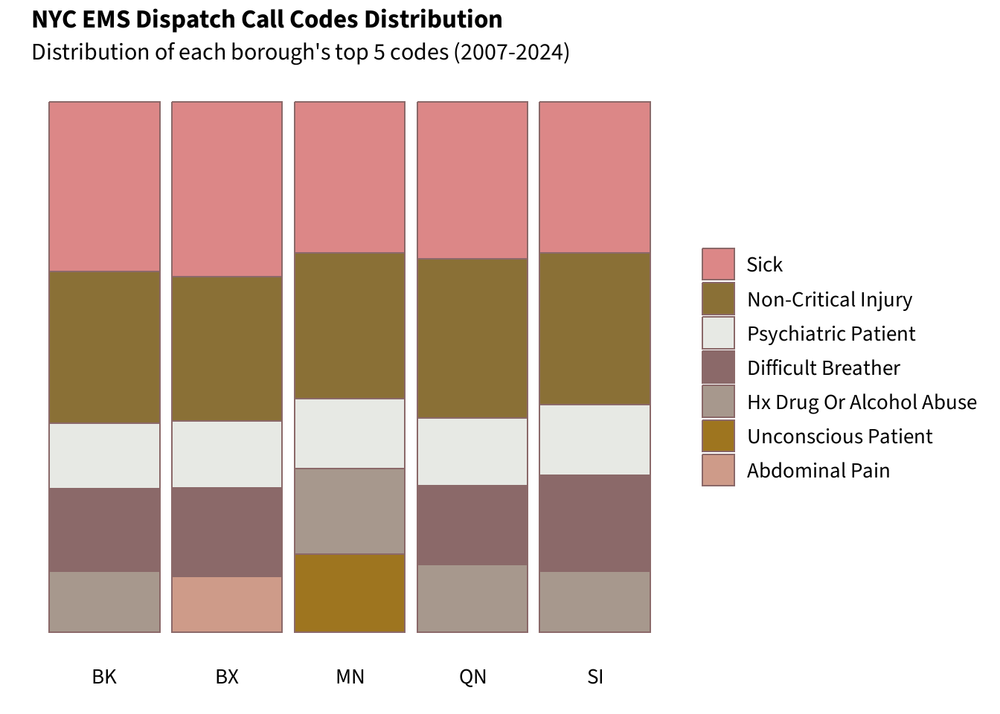
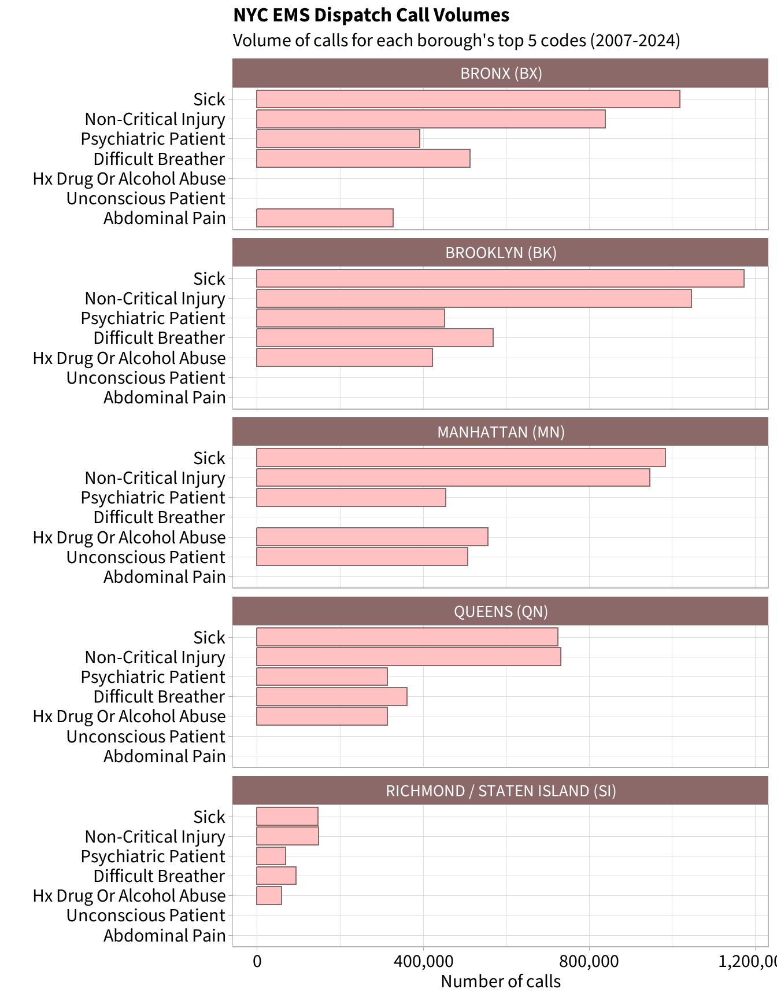

list.files("data")
# [1] "EMS_Incident_Dispatch_Data_20250119.csv"
list.files("data", full.names = T) |>
file.size() |>
scales::comma()
# 6,317,252,621 Bytes
# 5.88 GBNYC Dispatch Calls: An Arrow Demo
Introduction
NYC’s EMS dispatch data contains 27M records, resulting in a 5.88GB csv. (Data link - open in new tab)
This could fit in my computer’s memory, but for demonstration purposes I will pretend this is beyond my RAM (16GB). I will split this dataset into manageable parquet files using arrow.
Create Parquet Files
After connecting to the dataset, I can scan through columns to pick a base for my parquet files.
tic()
ems_nyc_full <- arrow::open_dataset(
sources = "data/EMS_Incident_Dispatch_Data_20250119.csv",
col_types = schema(),
format = "csv"
)
toc() # 0.07 sectic()
glimpse(ems_nyc_full)
toc() # 40.22 sec elapsed
# FileSystemDataset with 1 csv file
# 27,223,682 rows x 31 columns
# $ CAD_INCIDENT_ID <int64> 71262688, 71262787, …
# $ INCIDENT_DATETIME <string> "05/06/2007 06:21:01…
# $ INITIAL_CALL_TYPE <string> "STNDBY", "UNC", "CA…
# $ INITIAL_SEVERITY_LEVEL_CODE <int64> 8, 2, 3, 5, 7, 2, 6,…
# $ FINAL_CALL_TYPE <string> "STNDBY", "UNC", "CA…
# $ FINAL_SEVERITY_LEVEL_CODE <int64> 8, 2, 3, 5, 7, 2, 6,…
# $ FIRST_ASSIGNMENT_DATETIME <string> "", "05/06/2007 06:5…
# $ VALID_DISPATCH_RSPNS_TIME_INDC <string> "N", "Y", "Y", "Y", …
# $ DISPATCH_RESPONSE_SECONDS_QY <int64> 0, 12, 60, 0, 154, 5…
# $ FIRST_ACTIVATION_DATETIME <string> "", "05/06/2007 06:5…
# $ FIRST_ON_SCENE_DATETIME <string> "", "05/06/2007 07:0…
# $ VALID_INCIDENT_RSPNS_TIME_INDC <string> "N", "Y", "N", "Y", …
# $ INCIDENT_RESPONSE_SECONDS_QY <int64> NA, 391, NA, 0, 262,…
# $ INCIDENT_TRAVEL_TM_SECONDS_QY <int64> NA, 379, NA, 0, 108,…
# $ FIRST_TO_HOSP_DATETIME <string> "", "", "", "05/06/2…
# $ FIRST_HOSP_ARRIVAL_DATETIME <string> "", "", "", "05/06/2…
# $ INCIDENT_CLOSE_DATETIME <string> "05/06/2007 06:21:01…
# $ HELD_INDICATOR <string> "N", "N", "N", "N", …
# $ INCIDENT_DISPOSITION_CODE <string> "NOTSNT", "90", "87"…
# $ BOROUGH <string> "QUEENS", "BRONX", "…
# $ INCIDENT_DISPATCH_AREA <string> "Q2", "B3", "Q2", "M…
# $ ZIPCODE <int64> NA, NA, NA, 10036, 1…
# $ POLICEPRECINCT <int64> NA, NA, NA, 14, 47, …
# $ CITYCOUNCILDISTRICT <int64> NA, NA, NA, 3, 12, 1…
# $ COMMUNITYDISTRICT <int64> NA, NA, NA, 104, 212…
# $ COMMUNITYSCHOOLDISTRICT <int64> NA, NA, NA, 2, 11, 2…
# $ CONGRESSIONALDISTRICT <int64> NA, NA, NA, 10, 16, …
# $ REOPEN_INDICATOR <string> "N", "N", "N", "N", …
# $ SPECIAL_EVENT_INDICATOR <string> "N", "N", "N", "N", …
# $ STANDBY_INDICATOR <string> "Y", "N", "N", "N", …
# $ TRANSFER_INDICATOR <string> "N", "N", "N", "N", …Ideally, I would create parquet files by year. However, all date columns were stored as strings.
In lieu of a prepared date variable, I will split EMS incidents by {BOROUGH}.
tic()
ems_nyc_full |>
group_by(BOROUGH) |>
count(sort = T) |>
collect()
toc()
# 13.48 sec elapsed
# A tibble: 6 × 2
# Groups: BOROUGH [6]
# BOROUGH n
# <chr> <int>
# 1 BROOKLYN 7747447
# 2 MANHATTAN 6717310
# 3 BRONX 6316780
# 4 QUEENS 5314633
# 5 RICHMOND / STATEN ISLAND 1127300
# 6 UNKNOWN 212tic()
ems_nyc_full |>
group_by(BOROUGH) |>
arrow::write_dataset(path = "data/ems-nyc", format = "parquet")
toc()
# 55.36 sec elapsedThis created sub-folders named after each Borough. Each contains a parquet file, most of which being in the ideal 20MB - 2GB range.
tibble(
files = list.files("data/ems-nyc", recursive = TRUE),
mb = file.size(file.path("data/ems-nyc", files)) / 1024^2
) |>
janitor::adorn_totals() |>
mutate(mb = scales::comma(mb))
# files mb
# BOROUGH=BRONX/part-0.parquet 480
# BOROUGH=BROOKLYN/part-0.parquet 573
# BOROUGH=MANHATTAN/part-0.parquet 506
# BOROUGH=QUEENS/part-0.parquet 416
# BOROUGH=RICHMOND.../part-0.parquet 126
# BOROUGH=UNKNOWN/part-0.parquet 1
# Total 2,102These compressed files sum to 2.05GB - a sharp decrease from the original 5.88GB!
Import Parquet
I can once again use open_dataset() to establish a connection to my data. In this case, I will use my compressed parquet files.
ems_nyc_parquet <- open_dataset("data/ems-nyc")I will analyze final call types. This is an assigned severity for each incident based on caller details.
ems_nyc_parquet |>
group_by(FINAL_CALL_TYPE) |>
count(sort = T) |>
collect()
# FINAL_CALL_TYPE n
# <chr> <int>
# 1 SICK 4049378
# 2 INJURY 3714001
# 3 DIFFBR 1950231
# 4 EDP 1681874
# 5 DRUG 1663994
# 6 UNC 1527166
# 7 UNKNOW 1302306
# 8 CARD 1203100
# 9 ABDPN 1153570
# 10 MVAINJ 869055To decode these acronyms, I must merge the data dictionary file EMS_incident_dispatch_data_description.xlsx.
call_types_raw <- readxl::read_xlsx(
"data/EMS_incident_dispatch_data_description.xlsx",
sheet = 3
)
colnames(call_types_raw) <- paste(
"call", c("code", "description"),
sep = "_"
)Joins
I could convert my call_types_raw to a parquet file. However, it’d be much easier on R’s memory to collect() summary tables, then tack on the metadata. Additionally, parquet files only allow a narrow set of dplyr verbs to be applied. Collecting the summary tables circumvents this.
### Quick but restricting approach
# Convenient but requires more memory
call_types_arrow <- arrow_table(call_types_raw)
# Resulting file is compatible with limited set of dplyr verbs
ems_nyc_join <- ems_nyc_parquet |>
left_join(call_types_arrow,
by = c("FINAL_CALL_TYPE" = "call_code")) ### Longer but flexible approach
# Collect summary tables
borough_call_types <- ems_nyc_parquet |>
group_by(BOROUGH, FINAL_CALL_TYPE) |>
count() |>
collect()
# Then, append metadata as normal
# Can apply more functions, such as slice()
borough_call_types_top5 <- borough_call_types |>
left_join(call_types_raw,
by = c("FINAL_CALL_TYPE" = "call_code")) |>
arrange(BOROUGH, desc(n)) |>
group_by(BOROUGH) |>
slice(1:5) |>
mutate(temp = 1) |>
mutate(rank = cumsum(temp),
call_description =
stringr::str_to_title(call_description)) |>
select(borough = BOROUGH,
rank,
call_code = FINAL_CALL_TYPE,
call_description,
calls = n)A quick glance of the summary table, to be used in Analysis:
borough_call_types_top5 |> head()
# borough rank call_code call_description calls
# <chr> <dbl> <chr> <chr> <int>
# 1 BRONX 1 SICK Sick 1019300
# 2 BRONX 2 INJURY Non-Critical Injury 839998
# 3 BRONX 3 DIFFBR Difficult Breather 513740
# 4 BRONX 4 EDP Psychiatric Patient 391644
# 5 BRONX 5 ABDPN Abdominal Pain 327507
# 6 BROOKLYN 1 SICK Sick 1173287Analysis
To my summary table, I’ve added borough acryonyms for easy plotting. I adapted the beautiful color palette, Anchoviella Lepidentostole, from the R package fishualize.
Show data viz prep code
# order Call Types by overall ranking
call_types_order <- borough_call_types_top5 |>
filter(borough != "UNKNOWN") |>
group_by(call_description) |>
mutate(overall_calls = sum(calls)) |>
ungroup() |>
mutate(call_description = forcats::fct_reorder(
.f = call_description,
.x = overall_calls)
) |>
mutate(borough_ac = case_when(
borough == "BRONX" ~ "BX",
borough == "BROOKLYN" ~ "BK",
borough == "MANHATTAN" ~ "MN",
borough == "QUEENS" ~ "QN",
borough == "RICHMOND / STATEN ISLAND" ~ "SI",
)) |>
rowwise() |>
mutate(borough_full = paste0(borough, " (", borough_ac, ")"))Show table code
call_types_order |>
select(
`Borough` = borough,
`Acryn` = borough_ac,
`Code` = call_code,
`Description` = call_description,
`Calls` = calls,
`Rank` = rank,
) |>
DT::datatable(
options = list(
dom = "tp",
autoWidth = TRUE, # coerce colwidths
columnDefs = list(
list(width = '15%', targets = c(0, 1, 2, 5)), # index starts at 0
list(width = '20%', targets = c(3, 4))
),
initComplete = JS(
"function(settings, json) {",
"$(this.api().table().header()).css({'background-color': '#8b6969', 'color': '#fff'});",
"}")
),
rownames = F,
class = 'compact stripe',
width = '95%'
) |>
DT::formatRound(c('Calls'), digits = 0)
First, a relative comparison of Top 5 codes.
Show ggplot code
call_types_order |>
mutate(call_description = forcats::fct_rev(call_description)) |>
ggplot() +
geom_bar(aes(x = borough_ac,
y = calls,
fill = call_description),
stat = 'identity',
color = "rosybrown4",
width = 0.9,
position = "fill") +
ggtitle("NYC EMS Dispatch Call Codes Distribution") +
labs(x = "", y = "",
subtitle = "Distribution of each borough's top 5 codes (2007-2024)") +
scale_fill_manual(
values = c("#dc8787", # sick
"#8A7036", # non-critical injury
"#E7E9E4", # psych - SWAP
"#8b6969", # difficult breather
"#A7988D", # hx or alcohol
"#9e751f", # unconsious
"#CE9B89" # abdominal pain
)
) +
# For Source Sans, increase font sizes by **10**
theme(text = element_text(family = "Source Sans"),
legend.position = "right",
legend.title = element_blank(),
legend.text = element_text(size = 22,
colour = "#000000"),
plot.subtitle = element_text(size = 24),
panel.background = element_rect(fill = "#FFFFFF"),
axis.text.y = element_blank(),
axis.ticks = element_blank(),
axis.text.x = element_text(size = 22,
colour = "#000000"),
plot.title = element_text(family = "Source Sans Bold",
size = 26))
For scale, an absolute comparison of these Top 5 codes:
Show ggplot code
# plot ordered data
call_types_order |>
ggplot() +
geom_bar(aes(x = call_description,
y = calls),
stat = 'identity',
color = "rosybrown4",
fill = "rosybrown1",
width = 0.9) +
facet_wrap(~borough_full, ncol = 1) +
scale_y_continuous(labels = scales::label_comma(),
breaks = scales::breaks_extended(3)) +
labs(y = "Number of calls", x = "",
subtitle = "Volume of calls for each borough's top 5 codes (2007-2024)") +
ggtitle("NYC EMS Dispatch Call Volumes") +
coord_flip() +
theme_light() +
# For Source Sans, increase font sizes by **10**
theme(text = element_text(family = "Source Sans"),
axis.text = element_text(size = 24,
colour = "#000000"),
axis.title = element_text(size = 24),
strip.background = element_rect(fill = "rosybrown4",
colour = NA),
strip.text = element_text(size = 22),
plot.subtitle = element_text(size = 24),
plot.title = element_text(family = "Source Sans Bold",
size = 26)
)
These call categorizations present an opportunity for public health, policy research, and journalism:
- The frequency of Difficult Breather calls could be mapped against contagious disease outbreaks (i.e., influenza) to estimate health burden.
- The frequency of Psychiatric Patient calls may be compared between boroughs with highly contrasting mental health and housing policies.
- Identifying high call volume days may inform resource allocation for subsequent years. For instance, 4th of July is a day with exceptional fire hazards.